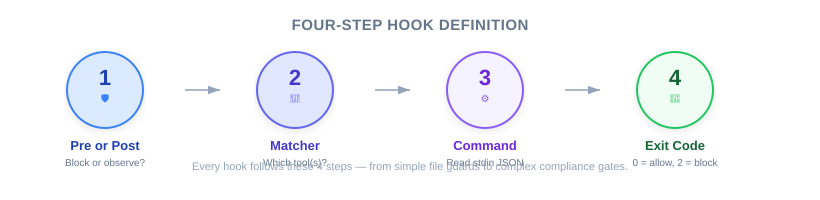

| Item | Details |
|---|---|
| Exam Coverage | D3 — Claude Code Configuration & Workflows (20% of exam) |
| Task Statements | 3.2 (custom commands & hooks), 1.5 (Agent SDK hooks) |
| Course Source | claude-code-in-action / 05-hooks / Lesson 15 |
Defining a hook follows four steps that mirror setting up a quality checkpoint in a factory: (1) decide whether to inspect before or after the work is done, (2) choose which production lines to monitor, (3) write the inspection procedure, and (4) decide whether to approve or reject the output. PMs must understand this process to write correct acceptance criteria and communicate with engineers about what can be guaranteed vs. what is best-effort.
When you write a PRD, you specify requirements. Some requirements must be met 100% of the time (compliance, security), while others are best-effort (tone, formatting). Understanding the four-step hook definition process helps you:
Think of Claude Code as a factory assembly line. Tools are the machines (drilling, welding, painting). Hooks are the quality checkpoints you install:
| Step | Factory Analogy | Hook Definition |
|---|---|---|
| 1. Pre or Post? | Inspect raw materials before drilling, or inspect finished parts after welding? | PreToolUse blocks before action; PostToolUse inspects after action |
| 2. Which line? | Monitor the paint booth and the welding station | matcher: "Read|Grep" selects which tools |
| 3. Inspection procedure | Quality inspector follows a checklist | Command script reads tool call data (JSON) and applies rules |
| 4. Pass or fail? | Green light (continue) or red light (stop the line) | Exit code 0 (allow) or 2 (block) |
💡 PM Decision Framework
When writing acceptance criteria, ask: "Is this a green-light/red-light requirement (hook), or a guideline (prompt)?"
- Red light: "The system MUST prevent reading credentials" → Hook
- Guideline: "The system SHOULD respond in a friendly tone" → Prompt

| Requirement Type | Hook Type | Business Example |
|---|---|---|
| Prevention / Compliance | PreToolUse | Block refunds > $500 without manager approval |
| Logging / Quality Check | PostToolUse | Log every customer interaction to CRM |
| Auto-correction | PostToolUse | Run spell-check after every document edit |
⚠️ Critical for PMs
If your requirement says "must never" or "must always prevent," specify PreToolUse in your acceptance criteria. PostToolUse cannot prevent — it only reacts after the fact.
The matcher field selects which AI tools trigger the checkpoint. Common scenarios:
| PM Requirement | Engineer Translates To |
|---|---|
| "Claude must not read credential files" | matcher: "Read|Grep" |
| "Auto-format every file Claude writes" | matcher: "Write|Edit|MultiEdit" |
| "Log all shell commands" | matcher: "Bash" |
| "Monitor everything" | matcher: ".*" |
💡 Common PM Oversight
PMs often forget that
Grep(search) can also expose file contents, not justRead. Always ask your engineer: "Are there other tools that could access this data?"
The hook command receives detailed information about what Claude is trying to do — not just "Claude wants to read a file" but specifically "Claude wants to read /src/config/.env using the Read tool."
This granularity means hooks can make very precise decisions based on file paths, command content, or any other parameter.
| Verdict | Exit Code | What Happens Next |
|---|---|---|
| Approved | 0 | Tool call proceeds normally |
| Rejected | 2 | Tool call is blocked; Claude receives the rejection reason and adjusts |
The rejection feedback creates a self-correcting loop — Claude does not just fail silently; it understands why and tries an alternative approach.
Key points from the instructor that PMs should note:
| means OR. This is a technical detail, but PMs should know that one hook can watch multiple tools.| ❌ Wrong Approach | ✅ Correct Approach | Why |
|---|---|---|
| Write "must prevent X" in PRD without specifying enforcement mechanism | Specify "enforce via PreToolUse hook" in acceptance criteria | Without specification, engineers may use prompt-based solutions |
| Assume PostToolUse can prevent actions | Use PreToolUse for prevention requirements | PostToolUse runs after the action — too late to prevent |
| Monitor only one tool when multiple tools can do the same thing | Ask engineers which tools can access the data | Grep can read file contents just like Read |
| Skip the rejection message | Require clear feedback messages in hook specs | Claude needs feedback to self-correct |
You are writing a PRD for an AI customer support agent. One requirement states: "The agent must never access customer payment details stored in the .credentials directory." An engineer proposes adding this instruction to the system prompt. What should you recommend?
.credentials paths.credentials filesYour team wants Claude Code to automatically run a code formatter after every file edit. The formatter should not block Claude's work — just clean up formatting. Which step-by-step approach would you specify in the requirements?
A team uses Claude Code to generate API endpoint code. They want to ensure all generated files follow the project's naming convention (snake_case). If a file does not follow the convention, the generation should be blocked. What hook configuration should you request?